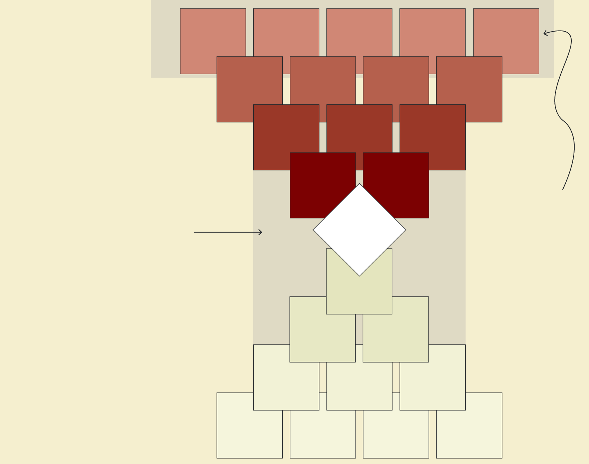
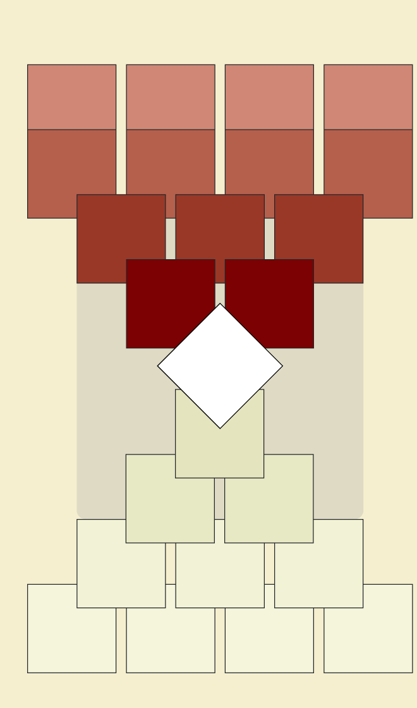

At present, 13 bills prohibiting
political dynasties are pending at the House of Representatives. None
of those proposals have been tackled yet, although House Speaker
Faustino Dy
pledged recently to start discussions on the measure.
Like any bill, an anti-dynasty law would have to be passed by the
House and the Senate, where there are also bills filed for the similar
purpose. Once both chambers approve their own version of the bill, a
reconciled version would have to go the President for enactment. Not
only has that not happened yet, but no anti- political dynasty bill
has hurdled past the committee level at the House ever.
As if that is not enough, when a bill fails to get enacted in a
session of Congress, a bill just dies regardless of the progress it
has made, prompting proponents to refile the same measure every three
years when a new session opens.
Anti-dynasty bills filed at the House of Representatives, by
administration
According to recent House records, the farthest an anti-political
dynasty bill has gone through the House was securing an approval from
the House committee on suffrage. That happened twice in 2006 and 2013
when the committee approved substitute bills to various pending
measures after making some tweaks on them. However, those same bills
died at another committee, the House committee on rules, which was
required to sign off on them on the first reading and bring the bills
to the plenary.
Anti-political dynasty bills are short and simple. Of the 13 pending
bills at the House, none of them exceeded 10 pages. The main provision
of most of these bills is also similarly concise: 10 bills
specifically bar a person within the second degree of consanguinity or
affinity to an incumbent from running for an elective post in the same
province, city or municipality. The provision also applies to
incumbents in national positions such as senators and president.
The three other bills, meanwhile, want a stricter prohibition that
bars relatives up to the fourth degree from elected posts. These bills
were filed by lawmakers from the Makabayan bloc and Akbayan partylist.
Who can't run for office under the anti-dynasty proposals?

Relationship by
CONSANGUINITY
Under most proposed anti-dynasty laws, relatives up to second
level of consanguinity and affinity are barred from running
for or holding public office at the same time.
Makabayan bloc’s anti-dynasty law proposals block
dynasties from public office up to fourth degree of
consanguinity and affinity.
Candidate or elected official
Great grandparent
-in-law

Candidate
or elected official
Barred from holding elected public office at same time
Great grandparent
-in-law
Currently, the only elective public post where the Constitution's
anti-dynasty provision is being enforced is at the local Sangguniang
Kabataan level, where relatives of a local or national elected
official, within the second degree of consanguinity and affinity,
are banned from running for an SK position. This was laid out under
Republic Act No. 10742 or the SK Reform Act of 2015.
The revival of discourse on political dynasties, and potential
legislative moves of a fix, came as a reaction to the corruption
scandal that has plagued the government's multibillion-peso
flood control projects
and allegedly benefitted lawmakers, their families and allies in
public office. No less than Leyte Rep. Martin Romualdez, a first
cousin to President Ferdinand Marcos Jr. and
former House speaker, supposedly financially benefit from projects in his province. He
denied any wrongdoing.
Because of the involvement of political families to the scandal,
many view an anti-political dynasty law as a potential cure to
patronage politics and public corruption. Scholars have argued the
law indeed has some benefits, but unlikely to be a complete
solution. It would also depend on how the law is crafted, and
eventually enforced: under the majority of current anti-dynasty
bills at the House, for instance, without his wife in office,
Romualdez would still be eligible to hold office while Marcos Jr. is
president.
The prevalence of political families in the Philippines has been
constantly cited as a hindrance to enacting an anti-political
dynasty law. In the past, some public officials would even justify
holding public office alongside or after their relatives by citing
their supposed desire to serve the public and in some instances,
alleged good governance record.
A
study
by the Ateneo School of Government in 2019 showed that 29% of local
positions that year, from councilors to district representatives,
were held by members of "fat" political dynasties or where there are
at least two or more people from the same clan holding positions.
The share was higher when broken down by positions.
'Fat' dynasties increased local positions in 2019
Share of positions occupied by 'fat' dynasties in
2004 and
2019
A
report
from the Philippine Center of Investigative Journalism last May
showed this number could be higher after the 2025 midterm
elections.
Prinz Magtulis
Note
Updated (Dec. 9): Added a paragraph on the SK anti-political
dynasty provision.
Sources
House of Representatives, Ateneo Policy Center, Data Dictionary
research
Copyright 2025 - The
Data Dictionary
Project